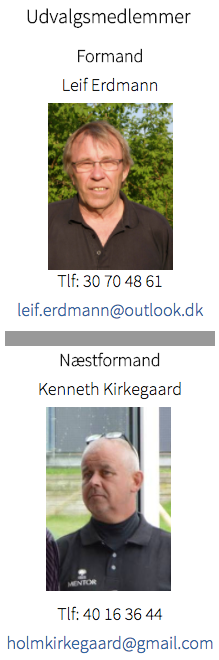

<div class="pages">
  <div data-page="turneringer" class="page navbar-fixed toolbar-fixed" >
    <div class="navbar">
      <div class="navbar-inner">
        <div class="left">
          <a href="#" class="link back icon-only"><i class="icon icon-back"></i></a>
          <!-- <a href="#" class="back link icon-only"><i class="icon icon-back"></i></a> -->
        </div>
        <div class="center">Turneringsudvalget</div>
        <!-- <div class="right"></div> -->
        <div class="right">
        </div>
      </div>
    </div>
    <div class="page-content" style="padding-top:45px;">
       <div class="content-block">
          <p>Det overordnede ansvar for alle klubbens matcher samt deltagelse i DGU-arrangerede matcher, påhviler Turneringsudvalget.
          <br /><br />
          Udvalget har ansvaret for:<br /><br />
          • Planlægning af alle klubbens turneringer/matcher.<br />
          • Udarbejdelse og opdatering af klubbens Turnerings-propositioner<br />
          • Udarbejdelse af turneringsprogram<br />
          • Afvikling af alle turneringer i klubregi.<br />
          • Offentliggørelse af tilmeldingslister, startlister og resultatlister<br />
          • Indkøb samt overrækkelse af præmier (evt. i samarbejde med sponsorudvalget og matchsponsorer)<br />
          • Overordnet ansvar for klubbens officielle ugentlige turneringer (Lochers Piger, Begyndermatcher, Juniormatcher og Seniormatcher)<br />
          • Koordinering af klubbens deltagelse i Regionsmatcher og Danmarksserien.<br />
          • Koordinering af klubbens deltagelse i DGU-matcher.</p><br />
          
          
        </div>
    </div>
    </div>
    </div>
  </div>
</div>
